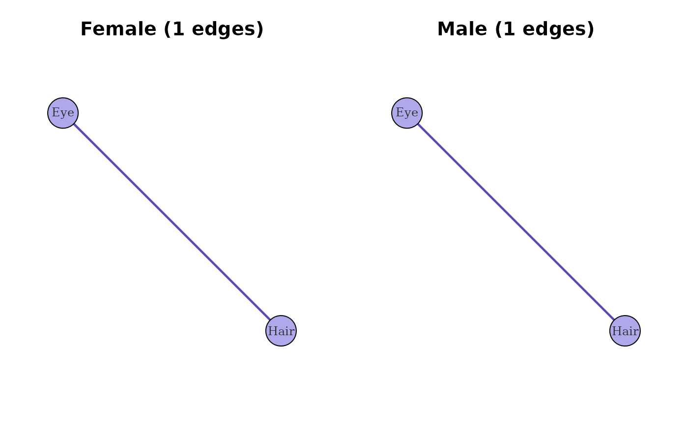

Visualises two or more catgraph objects side-by-side with a
shared node layout, for exploring how variable-level association
structure differs across populations, sites, time points, or other
grouping variables. All graphs must be built from the same variable
set (same column names).
Usage
compare_catgraphs(
x,
pruning = c("pooled", "individual", "overlay", "none"),
min_weight = 0.05,
max_p = 0.05,
p_adjust = "BH",
layout_fn = igraph::layout_with_fr,
edge_width_range = c(0.5, 4),
vertex_size = 28,
...
)Arguments
- x
A named list of
catgraphobjects. The list names become panel titles. A minimum of two graphs is required.- pruning
Character. How to filter edges before plotting. One of:
"pooled"(default)Build a reference catgraph on all rows combined, apply BH-adjusted pruning at
max_pandmin_weight, and retain only those edges in every panel. This prevents sample-size artifacts: panels never differ in edge presence solely because one group had fewer observations."individual"Apply
prune_edgesto each graph independently at the specified thresholds. Differences in edge presence across panels are then shown directly, but may reflect power differences as well as substantive differences."overlay"Show all edges in every panel, with thin grey edges for non-significant pairs and thick coloured edges for those surviving
"individual"pruning. Most information-dense; busiest visually."none"No filtering; every pair is shown.
- min_weight
Numeric. Effect-size threshold used by the
"pooled","individual", and"overlay"modes. Default0.05.- max_p
Numeric. Adjusted p-value threshold used by the same modes. Default
0.05.- p_adjust
Character. Multiple-testing correction method, passed to
prune_edges. Default"BH".- layout_fn
Function. An igraph layout function applied to the union graph to produce the shared node coordinates. Default
igraph::layout_with_fr.- edge_width_range
Numeric vector of length 2. Min and max edge widths when rescaling edge weights for display. Default
c(0.5, 4).- vertex_size
Numeric. Vertex size. Default
28.- ...
Further arguments passed to
plot.igraph.
Value
Invisibly returns the reference union graph used to compute the shared layout (useful for further inspection). Called for its side effect: drawing the multi-panel comparison.
Details
The default "pooled" mode is the most statistically conservative
choice for cross-group comparison. It ensures every panel shows the
same edge set, so weight differences across panels are interpretable
as substantive differences rather than power differences. Use
"individual" only when power differences themselves are the
scientific object of interest (e.g., to document that group A has
enough data to detect an association that group B does not).
Note on "pooled" and mixed estimators. When pooled
pruning is used, the reference catgraph is rebuilt with the
corrected flag copied from the first element of
x. If your list mixes corrected and uncorrected graphs, pool
manually and call compare_catgraphs(..., pruning = "none")
on the pre-pruned objects instead.
Formal testing
This function visualises differences; it does not test them. For
permutation-based inferential comparison of modality-level
networks, see test_modality_graph_equality and
test_modality_edge_differences.
Examples
# Split HairEyeColor into two populations and compare
df <- expand_table(HairEyeColor)
df_f <- df[df$Sex == "Female", c("Hair", "Eye")]
df_m <- df[df$Sex == "Male", c("Hair", "Eye")]
cg_f <- catgraph(df_f, corrected = TRUE)
#> Warning: At least one expected cell frequency is < 5 for pair (Hair, Eye). Consider setting simulate_p = TRUE.
cg_m <- catgraph(df_m, corrected = TRUE)
#> Warning: At least one expected cell frequency is < 5 for pair (Hair, Eye). Consider setting simulate_p = TRUE.
compare_catgraphs(list(Female = cg_f, Male = cg_m))
